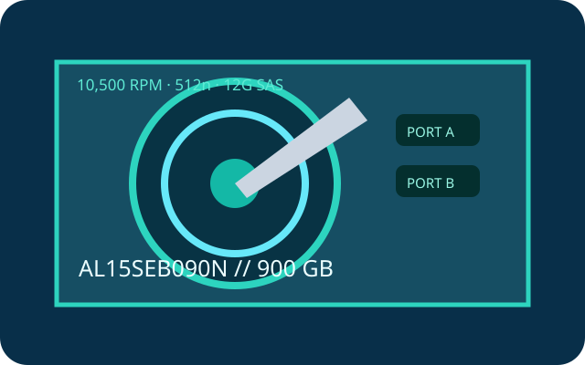

[ IDENTIFIED HDD // MODEL-SPECIFIC RECORD ]
Toshiba AL15SEB090N
900 GB 10.5K enterprise-performance SAS hard drive. The complete model code identifies the 512n version; do not infer sector format from capacity alone.

Recorded specifications
| Exact model | Toshiba AL15SEB090N |
|---|---|
| Capacity | 900 GB |
| Sector format | 512n (native 512-byte logical sectors) |
| Interface / ports | SAS-3, 12 Gbit/s, dual-port |
| Rotational speed | 10,500 rpm |
| Cache | 128 MiB buffer |
| Form factor | 2.5-inch, 15 mm class |
| Workload / reliability | Toshiba reports 2,000,000-hour MTTF for the AL15SE series; this population estimate is not a service-life promise. The cited series source states no annual workload rating or MTBF; MTTF is not MTBF. |
Host compatibility and qualification
- Requires a SAS-capable HBA/controller and SAS backplane or expander; a SATA-only HBA/backplane cannot address a SAS drive. Check the 2.5-inch carrier, power connector, dual-path requirements and controller qualification list.
- SAS-2 hosts may negotiate lower throughput if the model, firmware, controller and enclosure support it. Confirm 512n-sector and capacity support in the target OS/controller.
- MTTF is a population reliability statistic, not a warranty or forecast for a particular unit. Confirm actual sector presentation and firmware; keep independent tested backups.
Manufacturer sources
- Toshiba — AL15SE series product informationManufacturer family specifications, interface, performance and reliability context.
- Toshiba — Enterprise HDD product catalogManufacturer catalog; verify exact suffix/sector option on the drive label.